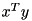

|
Eigen
3.3.4
|


|
|
Eigen
3.3.4
|
|
This page lists the most important API changes between Eigen2 and Eigen3, and gives tips to help porting your application from Eigen2 to Eigen3.
Up to version 3.2 Eigen provides Eigen2 support modes. These are removed now, because they were barely used anymore and became hard to maintain after internal re-designs. You can still use them by first porting your code to Eigen 3.2.
The USING_PART_OF_NAMESPACE_EIGEN macro has been removed. In Eigen 3, just do:
This is the single trickiest change between Eigen 2 and Eigen 3. It only affects code using std::complex numbers as scalar type.
Eigen 2's dot product was linear in the first variable. Eigen 3's dot product is linear in the second variable. In other words, the Eigen 2 code
is equivalent to the Eigen 3 code
In yet other words, dot products are complex-conjugated in Eigen 3 compared to Eigen 2. The switch to the new convention was commanded by common usage, especially with the notation

for dot products of column-vectors.| Eigen 2 | Eigen 3 |
|---|---|
vector.start(length) vector.start<length>() vector.end(length) vector.end<length>() | vector.head(length) vector.head<length>() vector.tail(length) vector.tail<length>() |
| Eigen 2 | Eigen 3 |
|---|---|
matrix.corner(TopLeft,r,c) matrix.corner(TopRight,r,c) matrix.corner(BottomLeft,r,c) matrix.corner(BottomRight,r,c) matrix.corner<r,c>(TopLeft) matrix.corner<r,c>(TopRight) matrix.corner<r,c>(BottomLeft) matrix.corner<r,c>(BottomRight) | matrix.topLeftCorner(r,c) matrix.topRightCorner(r,c) matrix.bottomLeftCorner(r,c) matrix.bottomRightCorner(r,c) matrix.topLeftCorner<r,c>() matrix.topRightCorner<r,c>() matrix.bottomLeftCorner<r,c>() matrix.bottomRightCorner<r,c>() |
Notice that Eigen3 also provides these new convenience methods: topRows(), bottomRows(), leftCols(), rightCols(). See in class DenseBase.
In Eigen2, coefficient wise operations which have no proper mathematical definition (as a coefficient wise product) were achieved using the .cwise() prefix, e.g.:
In Eigen3 this .cwise() prefix has been superseded by a new kind of matrix type called Array for which all operations are performed coefficient wise. You can easily view a matrix as an array and vice versa using the MatrixBase::array() and ArrayBase::matrix() functions respectively. Here is an example:
Note that the .array() function is not at all a synonym of the deprecated .cwise() prefix. While the .cwise() prefix changed the behavior of the following operator, the array() function performs a permanent conversion to the array world. Therefore, for binary operations such as the coefficient wise product, both sides must be converted to an array as in the above example. On the other hand, when you concatenate multiple coefficient wise operations you only have to do the conversion once, e.g.:
With Eigen2 you would have written:
In Eigen 2 you had to play with the part, extract, and marked functions to deal with triangular and selfadjoint matrices. In Eigen 3, all these functions have been removed in favor of the concept of views:
| Eigen 2 | Eigen 3 |
|---|---|
A.part<UpperTriangular>(); A.part<StrictlyLowerTriangular>(); | A.triangularView<Upper>() A.triangularView<StrictlyLower>() |
A.extract<UpperTriangular>(); A.extract<StrictlyLowerTriangular>(); | A.triangularView<Upper>() A.triangularView<StrictlyLower>() |
A.marked<UpperTriangular>(); A.marked<StrictlyLowerTriangular>(); | A.triangularView<Upper>() A.triangularView<StrictlyLower>() |
A.part<SelfAdfjoint|UpperTriangular>(); A.extract<SelfAdfjoint|LowerTriangular>(); | |
UpperTriangular LowerTriangular UnitUpperTriangular UnitLowerTriangular StrictlyUpperTriangular StrictlyLowerTriangular | |
| Eigen 2 | Eigen 3 |
|---|---|
A.triangularSolveInPlace<XxxTriangular>(Y); | A.triangularView<Xxx>().solveInPlace(Y); |
Some of Eigen 2's matrix decompositions have been renamed in Eigen 3, while some others have been removed and are replaced by other decompositions in Eigen 3.
| Eigen 2 | Eigen 3 | Notes |
|---|---|---|
| LU | FullPivLU | See also the new PartialPivLU, it's much faster |
| QR | HouseholderQR | See also the new ColPivHouseholderQR, it's more reliable |
| SVD | JacobiSVD | We currently don't have a bidiagonalizing SVD; of course this is planned. |
| EigenSolver and friends | #include<Eigen/Eigenvalues> | Moved to separate module |
| Eigen 2 | Eigen 3 | Notes |
|---|---|---|
A.lu(); | A.fullPivLu(); | Now A.lu() returns a PartialPivLU |
A.lu().solve(B,&X); | X = A.lu().solve(B); X = A.fullPivLu().solve(B); | The returned by value is fully optimized |
A.llt().solve(B,&X); | The returned by value is fully optimized and the selfadjointView API allows you to select the triangular part to work on (default is lower part) | |
A.llt().solveInPlace(B); | In place solving | |
A.ldlt().solve(B,&X); | The returned by value is fully optimized and the selfadjointView API allows you to select the triangular part to work on |
The Geometry module is the one that changed the most. If you rely heavily on it, it's probably a good idea to use the "Eigen 2 support modes" to perform your migration.
In Eigen 2, the Transform class didn't really know whether it was a projective or affine transformation. In Eigen 3, it takes a new Mode template parameter, which indicates whether it's Projective or Affine transform. There is no default value.
The Transform3f (etc) typedefs are no more. In Eigen 3, the Transform typedefs explicitly refer to the Projective and Affine modes:
| Eigen 2 | Eigen 3 | Notes |
|---|---|---|
| Transform3f | Affine3f or Projective3f | Of course 3f is just an example here |
In Eigen all operations are performed in a lazy fashion except the matrix products which are always evaluated into a temporary by default. In Eigen2, lazy evaluation could be enforced by tagging a product using the .lazy() function. However, in complex expressions it was not easy to determine where to put the lazy() function. In Eigen3, the lazy() feature has been superseded by the MatrixBase::noalias() function which can be used on the left hand side of an assignment when no aliasing can occur. Here is an example:
However, the noalias mechanism does not cover all the features of the old .lazy(). Indeed, in some extremely rare cases, it might be useful to explicit request for a lay product, i.e., for a product which will be evaluated one coefficient at once, on request, just like any other expressions. To this end you can use the MatrixBase::lazyProduct() function, however we strongly discourage you to use it unless you are sure of what you are doing, i.e., you have rigourosly measured a speed improvement.
The EIGEN_ALIGN_128 macro has been renamed to EIGEN_ALIGN16. Don't be surprised, it's just that we switched to counting in bytes ;-)
The EIGEN_DONT_ALIGN option still exists in Eigen 3, but it has a new cousin: EIGEN_DONT_ALIGN_STATICALLY. It allows to get rid of all static alignment issues while keeping alignment of dynamic-size heap-allocated arrays. Vectorization of statically allocated arrays is still preserved (unless you define EIGEN_UNALIGNED_VECTORIZE =0), at the cost of unaligned memory stores.
A common issue with Eigen 2 was that when mapping an array with Map, there was no way to tell Eigen that your array was aligned. There was a ForceAligned option but it didn't mean that; it was just confusing and has been removed.
New in Eigen3 is the Aligned option. See the documentation of class Map. Use it like this:
There also are related convenience static methods, which actually are the preferred way as they take care of such things as constness:
In Eigen2, #include<Eigen/StdVector> tweaked std::vector to automatically align elements. The problem was that that was quite invasive. In Eigen3, we only override standard behavior if you use Eigen::aligned_allocator<T> as your allocator type. So for example, if you use std::vector<Matrix4f>, you need to do the following change (note that aligned_allocator is under namespace Eigen):
| Eigen 2 | Eigen 3 |
|---|---|
std::vector<Matrix4f> | std::vector<Matrix4f, aligned_allocator<Matrix4f> > |
In Eigen2, global internal functions and structures were prefixed by ei_. In Eigen3, they all have been moved into the more explicit internal namespace. So, e.g., ei_sqrt(x) now becomes internal::sqrt(x). Of course it is not recommended to rely on Eigen's internal features.
 1.8.13
1.8.13